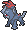
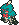
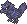
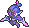
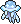

BALDUR'S GATE 3
Brize Lanuq
Héroïne drow

Brize Lanuq est une drow de la Seldarine et une voyageuse qui s'est construit une vie loin du monde dans lequel elle est née. Occultiste liée à une entité du Grand Ancien, elle préfère généralement les routes, les rencontres de passage, et les problèmes qui ne devraient pas être siens.
Malgré son indépendance farouche et son manque parfois impressionnant d'aisance sociale, Brize se montre naturellement attentionnée envers ceux dans le besoin. Elle a cependant la mauvaise habitude de repartir avant que quiconque ait véritablement le temps de s'en rendre compte.
Personnalité
Traits
- Qualités : Autonome, calme, attentionnée, pragmatique.
- Défauts : Solitaire, socialement clueless, excessivement indépendante, peu communicative.
Apparence
Brize est une drow à la peau ébène marquée de discrètes taches de rousseur plus sombres sur les joues et l'arête du nez. Elle est de taille moyenne et de silhouette svelte. Une ancienne cicatrice barre légèrement le haut de sa joue droite, tandis qu'une seconde plus visible remonte sur le côté gauche de son menton jusqu'au milieu de sa joue. Ses yeux gris très pâles, presque blancs, sont soulignés de marques noires.
Brize est reconnaissable au réseau de tatouages entourant entièrement sa gorge et sa nuque, descendant jusqu'aux omoplates. À l'origine, il s'agissait d'un marquage lié à Lolth, imposé durant son enfance. Elle l'a volontairement complexifié et recouvert de nouveaux motifs avec les années jusqu'à rendre le symbole initial pratiquement impossible à distinguer.
Ses cheveux blancs lui tombent jusqu'aux épaules, traversés de mèches et de petites tresses teintes en rouge. Elle les a longtemps portés rabattus sur le côté gauche du visage afin de dissimuler sa cicatrice. Plus tard, elle finit par les attacher en queue-de-cheval, plus pratique mais laissant son visage découvert. Elle porte un piercing au-dessus du sourcil droit et deux boucles d'argent en forme de demi-roues à pointes offertes par une proche.
Brize privilégie des vêtements simples et résistants : bottes, pantalon, chemise et large manteau sombre, généralement accompagnés d'une écharpe qui dissimule en partie les tatouages de son cou. Elle ajoute souvent une cape à capuche lors de ses voyages pour masquer son visage et ses oreilles.


Fiche mécanique
Occultiste du Grand Ancien
Brize est une occultiste liée à une entité du Grand Ancien. Elle combat principalement à distance à l'aide de Décharge occulte, tout en utilisant ses sorts pour contrôler le terrain et éviter autant que possible de s'exposer inutilement.
Elle ne porte généralement aucune armure, privilégiant l'agilité et l'aisance de mouvement. L'invocation Armure des ombres lui permet de lancer Armure de mage chaque matin, offrant une protection essentielle en combat. Au fil de l'aventure, elle obtient également les sorts d'Armure d'Agathys, Image miroir et Hâte alors que les combats deviennent plus dangereux.
Pacte de la lame
Brize préfère garder ses ennemis à distance, mais est tout à fait capable de se défendre au corps-à-corps. Son Pacte de la lame lui permet d'utiliser efficacement l'arme qu'elle choisit de lier à son pacte.
Elle commence son aventure avec des dagues et des poignards, faciles à transporter et dissimuler. Plus tard, elle récupère Nyrulna, un trident qui devient son arme principale.
Biographie
Brize grandit dans une cité souterraine drow des Tréfonds Obscurs, au sein d'une société liée au culte de Lolth. Durant son enfance, elle reçoit un tatouage à la gorge la marquant à vie dont elle ignore la signification.
Encore jeune, elle tente de fuir le culte à plusieurs reprises. Désespérée, elle conclut un pacte avec une entité du Grand Ancien, pacte lui permettant enfin de s'échapper au monde dans lequel elle a grandi : la surface.
Ses premières semaines à la lumière du soleil sont surtout consacrées à survivre. Peu après son arrivée, le village dans lequel elle se cache est pillé par des brigands. Elle tue alors accidentellement l'un d'entre eux en cherchant à se protéger, sauvant les habitants en faisant fuir le reste des pillards.
Brize voyage dès alors de lieu en lieu, aidant lorsque l'occasion se présente en échange d'un repas, d'un toit ou simplement de quoi poursuivre sa route. Elle prend cependant l'habitude de ne jamais rester très longtemps au même endroit, préférant repartir avant que la présence prolongée d'une drow ne commence à susciter trop de méfiance.
Anecdotes
- Chaque année qui passe, Brize ajoute un nouveau tatouage à ceux qui recouvrent sa gorge et sa nuque. Elle a commencé pour masquer ses marques d'origines, puis a simplement continué par habitude.
- Elle se rappelle rarement de ses propres faits d'arme. Ce que certains qualifieraient d'héroïsme, elle préfère appeler de la simple "interférence", surtout lorsqu'elle se mèle d'affaires qui ne la concerne pas.
- D'ordinaire solitaire, Brize ne sait pas vraiment comment être vulnérable avec autrui. Un simple changement de coiffure exposant mieux son visage est vécu comme quelque chose d'immense pour elle. Cela la rend surprenament timide dans des situations sociales détendues.
- Brize est beaucoup plus douée pour offrir des cadeaux émotionnellement dévastateurs que pour exprimer des sentiments. Elle peut passer plus de temps que nécessaire à chercher le bon objet tout en soutenant qu'il s'agit simplement d'un choix pratique.
- Elle achète fréquemment de petits objets et babioles "pouvant servir" en voyage. Sa définition de "pouvant servir" est suffisamment large pour inclure une quantité déraissonnable de cordes, trois potions au effets inconnus, et assez de vivres pour nourir tout un village à travers un hiver.




